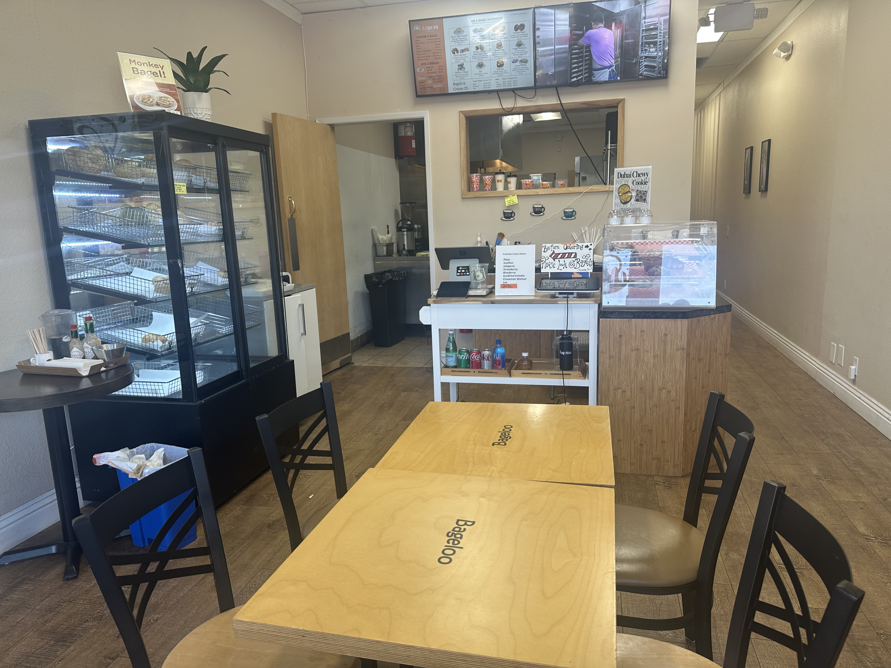
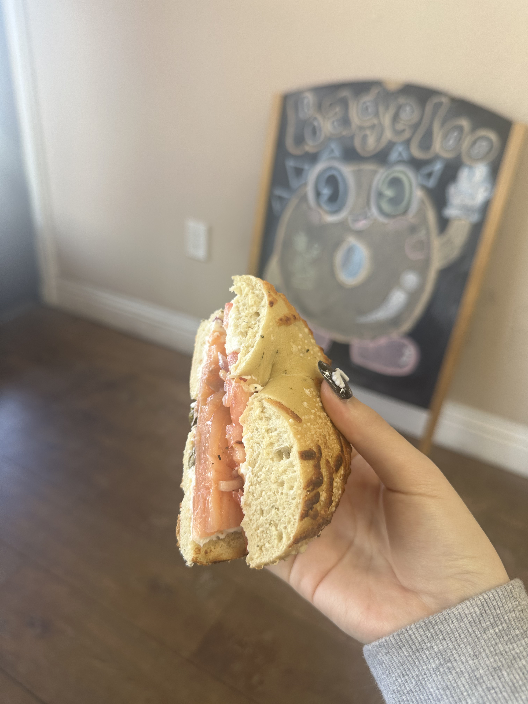
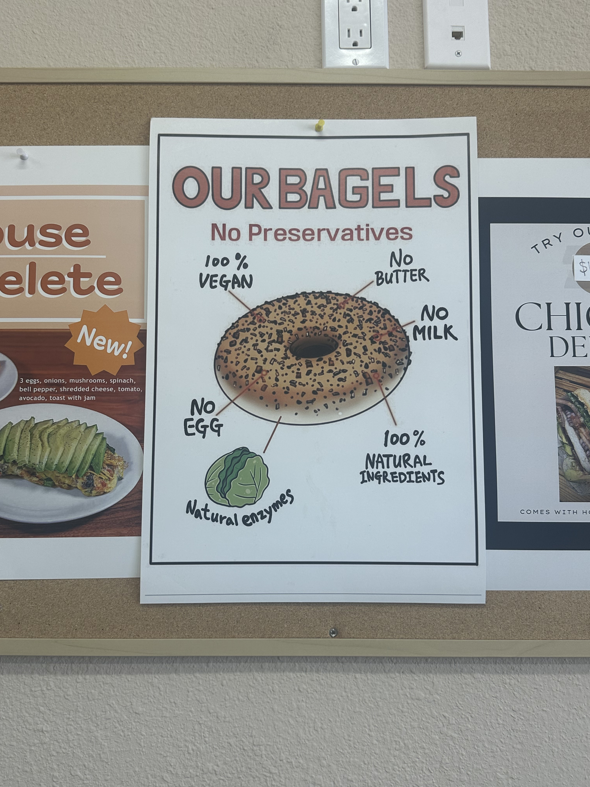

L
L
a low-key pasadena bagel sandwich spot serving up soft, fresh bagels with simple, solid flavors. it's more local and understated, so i stopped by to try their lineup and share what stood out.

bagels i tried
bacon egg & cheese on everything bagel
my verdict
4/10

's
lox sandwich on spinach parmesan bagel
my verdict
6/10

's
my 2 crumbs
this one felt more local and “clean” with the whole no preservatives thing, which is cool, but honestly… it didn't really hit the spot for me. the lox sandwich was almost $20 and didn't feel worth it, especially for how simple it tasted. it's definitely more of a bagel sandwich spot than just bagels, but i wasn't super impressed overall. would i go again? probably not… especially for the price. maybe if you care a lot about natural ingredients and enjoy bagel sandwiches, but otherwise it didn't stand out enough.


6/10